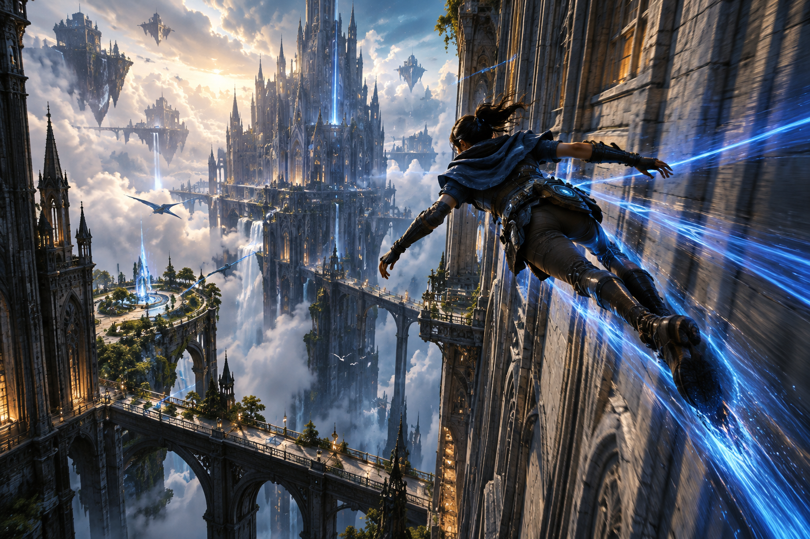
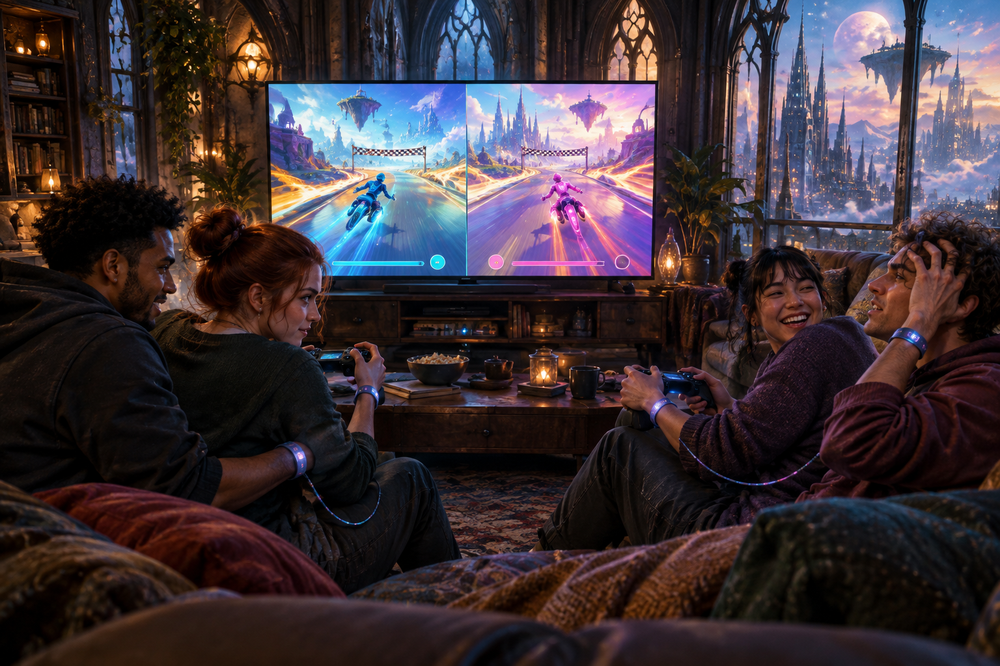

Spectacle Rewired: How Esports Is Transforming the Art of Sports Broadcasting
From interactive overlays to dynamic audience engagement, traditional sports broadcasters now look to esports for inspiration, reshaping how we watch, analyze, and connect with live competitions.
READ THE STORY ↗
Retro Resurrection: How DIY Hardware and Open-Source Fixes Rebooted PC Gaming’s Classic Era
From breadboard 486s to long-awaited GPU fixes, a new wave of hobbyist innovation is making the golden age of PC gaming playable in 2026 — and reshaping what it means to be a PC gamer today.
READ THE STORY ↗
Seamless Motion: How Momentum Movement is Transforming MMORPG Gameplay in 2026
A deep dive into momentum-based movement systems in modern MMORPGs, how they impact combat, exploration, and immersion, and why 2026 may be a turning point for fluid motion in persistent worlds.
READ THE STORY ↗
Living Lorekeepers: How AI NPCs with Memory are Transforming Role-Playing Games
The new wave of AI-powered NPCs—capable of remembering player actions across hours or campaigns—are turning RPGs into living, responsive worlds. Here’s how this breakthrough is reshaping the future of interactive storytelling.
READ THE STORY ↗
Beyond the Leaderboard: How Competitive Co-Op Modes Are Changing Console Gaming in 2026
In 2026, a new breed of co-op blending competition and collaboration is redefining console gaming’s social experience—inside the same living room and across the globe.
READ THE STORY ↗